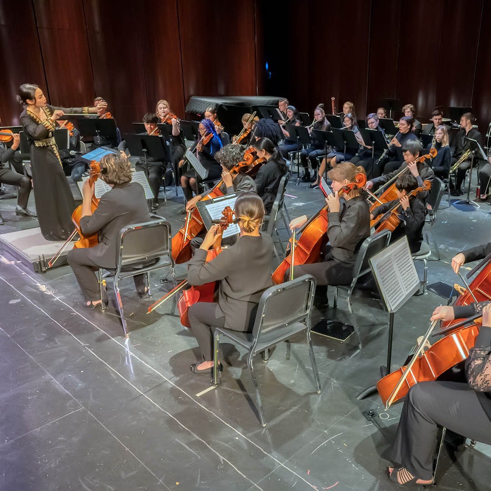

Welcome to Rowan NAfME
This is the official chapter website for the Rowan University NAfME Collegiate chapter, part of the National Association for Music Education.
What is NAfME?
The National Association for Music Education (NAfME) is one of the world’s largest arts education organizations. It supports music educators and advocates for quality music instruction for all students.
About Our Chapter
Rowan NAfME is a student-led collegiate chapter that fosters the growth of pre-service music educators through events, conferences, and advocacy.
State & National Organizations
What We Offer
- Professional development sessions
- Guest speakers and panels
- Networking with state and national educators
- Conference attendance and presentations
- Social events and community outreach
Our Vision & Goals for 2024–2025
- Foster a supportive community for future music educators.
- Expand outreach and service opportunities through music.
- Enhance professional development through workshops and panels.
- Increase student engagement and visibility within NJMEA and NAfME.
- Encourage cross-disciplinary collaboration within the arts and education fields.